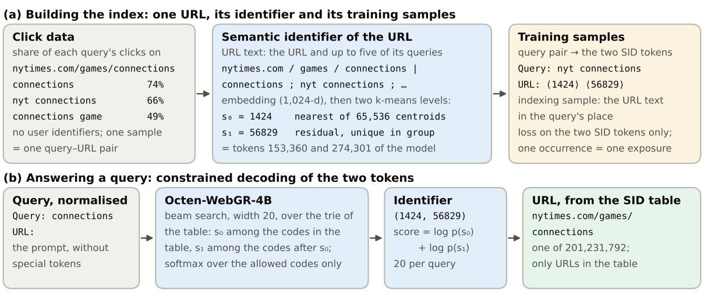
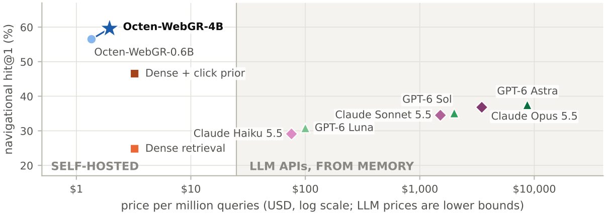

目录 · 8 节
1它到底在解决什么问题？2整体流程：两个 token 命名一个网页3主要结果：总体领先，新说法强，冷门网页弱4网页越多，生成式检索掉得越少5瓶颈在见过几次，不在模型多大6我认为它的局限7一个推荐/搜索团队可以怎么试8一句话结论生成式检索一直停在千万文档以内，最大的公开实验是 MS MARCO 的 880 万段落。Octen 团队的 Octen-WebGR（一个用生成式检索做网页导航搜索的模型）把它推到了 2.01 亿个网页：每个网页编成两个 token，4B 参数的模型读完查询直接生成这两个 token，再查表得到 URL。在训练结束后一个月的真实导航搜索流量上，它把目标网页排第一的比例是 59.6%，同样点击数据训练、再按点击量重排的向量检索是 46.5%，凭记忆回答的前沿大模型最多 37.5%。服务只要一张 GPU、约 10GB 显存，而精确向量检索的索引要 412GB 内存。
做搜索和推荐召回的团队值得细读，原因不在“生成式检索赢了”，而在它把两类方法的分工量得很清楚。对一个已经有很多点击记录的网页，换一种新说法来搜，生成式检索排第一的比例是 30.9%，向量检索只有 17.2%；对点击很少的冷门网页，结果反过来，向量检索 24.3%，生成式检索 14.3%。核心思想一句话：把每个网页的点击历史写进模型参数，模型就能学会一个只取决于网页本身的偏好项，这是相似度检索给不了的。它的证据来自私有点击数据，向量检索基线只训了两个线性层，也没有线上实验，这些在读结论时要记着。
它到底在解决什么问题？
很多搜索不是在问问题，而是在点名一个网页。用户输入“nyt connections”，要的就是纽约时报的那个字谜游戏页，排第一才算答对。这类导航查询目前主要靠两样东西回答，各有一块盲区。
| 方法 | 怎么回答 | 盲区（示意） |
|---|---|---|
| 点击表 | 查过去用户在同一查询下点得最多的网页 | 换个说法如“纽约时报 connections 游戏”，表里没有，答不上 |
| 向量检索 | 把查询和网页都编成向量，取最相似的 | 同一网站的帮助页、登录页、其他语言版本都很像，常把它们排在目标前面 |
论文的数据说明这两块盲区都不小。九月的导航流量里，有 33.1% 来自训练数据里从没出现过的查询，点击表全部答不上。向量检索则有 30.8% 的导航流量把目标放进了前十却没排第一，其中 46.1% 排在前面的是同一网站的另一页。生成式检索想同时补上这两块：既能泛化到新说法，又能学会“用户真正要的是哪一页”。
整体流程：两个 token 命名一个网页

整个系统分三步：给每个网页分配编码、用点击数据训练模型生成编码、查询时在编码表约束下解码。
第一步：给 2 亿个网页各分配一个唯一编码
为什么用两个 token？编码越短，解码步数越少；两层各 65,536 个取值，组合起来有四十多亿个，足够装下 2 亿个网页。编码的来源是网页的“URL 文本”：规范化的 URL 加上它点击最多的至多五个查询，比如“nytimes.com / games / connections | connections ; nyt connections ; …”，不含网页正文。这段文本先用向量模型编码成 1,024 维向量，再做两轮 k-means：第一轮聚成 65,536 类，所属类的编号就是第一层编码；第二轮对“向量减去类中心”的残差再聚 65,536 类，得到第二层编码。
普通的两轮聚类有个问题：两个网页可能落到同一对编码上，按论文的统计，1 亿网页里会有 51.5% 和别人撞号。作者的解决办法是在每个第一层类里按轮次分配第二层编码：每个还没分到编码的网页提出自己下一个最近的残差中心，几个网页抢同一个编码时，离中心最近的那个拿到。最终每个网页都有唯一编码，63.5% 拿到了自己最近的那个，96.2% 拿到了最近的八个之一。所以撞号问题解决了，代价只是少数网页的编码稍微偏离最佳位置。 Hoot 说

左右滑动或点箭头看三步。网页 P、Q、R，中心 c1–c3 和距离都是示意，论文没有给逐步例子；规则（未分到的网页提出下一个最近中心，同一编码被多人抢时最近的拿到）取自正文。论文统计 63.5% 的网页拿到最近的中心。 出处: 论文 §2：两轮 k-means 各 65,536 类；普通做法 1 亿网页里 51.5% 撞号；在每个第一层类内按轮次分配第二层编码，未分到的网页提出下一个最近的残差中心，争抢时最近者得；最终唯一，63.5% 得到最近、96.2% 得到最近八个之一
论文图里的例子是 nytimes.com/games/connections，编码为 (1424, 56829)。两层编码各占一套新 token，接在 Qwen3 原有的 151,936 个 token 后面，所以第一层的 1424 对应 token 151,936+1,424=153,360，第二层的 56829 对应 151,936+65,536+56,829=274,301。新 token 的初始向量这样设定：以第一层编码 1424 为例，找出所有指向“第一层编码为 1424 的网页”的查询，把每条查询写成提示输入模型，取模型用来预测下一个 token 的最后一层隐状态，再对这些向量逐维求平均。所以模型一开始就倾向于在相似查询后面生成这个编码。
第二步：用点击数据训练
一个训练样本就是一对“查询—被点击的网页”，写成“Query: 查询 URL: 两个编码 token”，损失只算在两个编码 token 上。抽样权重是这对组合的点击占该查询总点击的比例，再乘以该查询总点击数的平方根。为什么要开平方？举例来说，一个查询总共 100 次点击、其中 80 次点到某网页，权重是 0.8×10=8；另一个查询总共一万次点击、8,000 次点到某网页，权重是 0.8×100=80。点击量相差一百倍，样本数只差十倍，所以热门查询看得多，但不会挤掉长尾查询。训练数据里还混入一类索引样本：把网页的 URL 文本放在查询的位置，目标仍是该网页的两个编码。因为 URL 文本列出了网页最常见的几个查询，一条这样的样本就让模型同时看到好几种问法。
第三步：查询时只能生成存在的编码
查询规范化后作为提示，模型用宽度 20 的 beam search 生成两个 token。所有合法编码组成一棵前缀树：第一步只允许表里出现过的第一层编码，第二步只允许跟在已选第一层编码后面的第二层编码。所以模型输出的每一个结果都对应一个真实存在的 URL，不会编出不存在的网址。
主要结果：总体领先，新说法强，冷门网页弱
| 系统 | 全部导航流量 | 已见过的组合（62.0%） | 新查询·熟悉网页（9.0%） | 新查询·冷门网页（5.5%） |
|---|---|---|---|---|
| Octen-WebGR-4B | 59.6 | 88.2 | 30.9 | 14.3 |
| 向量检索（精确） | 24.8 | 34.4 | 17.2 | 24.3 |
| 向量检索 + 点击重排 | 46.5 | 68.7 | 21.4 | 13.1 |
| BM25（经典关键词匹配检索） | 9.1 | 10.8 | 9.2 | 25.5 |
| 只查点击表 | 58.9 | 93.4 | 0.0 | 0.0 |
表中数字是 hit@1，即目标网页排第一的流量占比，单位为 %；“熟悉网页”指训练数据里至少有 11 个查询指向它。
总体上生成式检索领先向量检索 34.8 个点，说明在导航任务上“哪一页”比“像不像”更重要。给向量检索加上点击重排后，差距缩到 13.0 个点。重排的做法是取向量检索的前 100 个结果，每个网页的分数改为余弦相似度加上 0.04 乘以 log10(1+该网页的训练点击数)。这个结果意味着向量检索缺的主要是一个只取决于网页本身的打分项，而生成式检索从点击里把这一项学进了参数。在向量检索把目标放进前十却没排第一的那部分流量上，生成式检索有 81.5% 排对了，这说明它正好补上了同站其他页面抢位的问题。
最后一列反过来：冷门网页只有 1 到 10 个训练查询，生成式检索没多少可学的，向量检索和 BM25 靠网页文本本身的相似度反而更好。作者因此试了组合方案：先查点击表；表里没有的查询，看生成式检索给出的第一个网页，如果这个网页在训练数据里至少有 3 个查询指向它，而且模型给它的概率不低于 0.15，就采用生成式检索的结果，否则改用向量检索。两个阈值都在七月的开发集上选定。这样总体 hit@1 到 63.1%，说明简单的路由就能把两者的长处拼起来。
网页越多，生成式检索掉得越少

这组实验不重新训练模型，只在查询时限制候选范围：作者从 2.01 亿网页里随机抽出层层嵌套的 200 万、800 万、3,200 万和 1.28 亿子集，每个子集都先放入九月评估流量的全部目标网页及其同站网页，再随机补足；生成式检索只在子集的编码前缀树上解码，向量检索只在子集里搜索。从 200 万扩到 2.01 亿，生成式检索的 hit@1 只从 64.2% 降到 59.6%，掉 4.7 个点；向量检索从 47.0% 降到 24.8%，掉 22.2 个点。原因在于两者对新增网页的处理不同：对向量检索，每多一个网页就多一个可能碰巧和查询相似的干扰项；生成式检索的概率已经集中在用户会点的网页上，多出来的网页大多根本到不了前几名。
成本方面，4B 模型显存 9.7GB，批量 64 时每条查询约 2.3 毫秒 GPU 时间，单条延迟 56 毫秒；0.6B 版本还能在一个 CPU 插槽上跑，单条 72 毫秒。这说明它的服务成本和一个中等规模的语言模型推理相当，不需要为 2 亿网页维护一个巨大的向量索引。图 1 显示大模型凭记忆回答不仅准确率低，每百万次查询的价格至少是它的 40 倍。
瓶颈在见过几次，不在模型多大
论文最有意思的部分是对“生成式检索能记住多少”的分析。作者固定每对查询—网页只训练两次，比较 0.6B 到 14B 的模型。结果是大模型每见一次学得更多，但真正的限制是见过的次数和时机：同样的 0.6B 模型，把每对组合训练 16 次，对训练过的组合有 67.4% 排第一，超过只训练两次的 14B 模型（64.3%），算力只用了约四分之一。
但重复对新查询没用。对训练里没出现过的 4,000 个导航查询，同一批组合从训练 2 次加到 16 次，hit@1 从 17.9% 降到 14.5%，几乎回到训练前的 13.7%。把同样的 16 次样本分给一个网页的 16 个不同查询，各训练一次，才对新查询有帮助。这意味着扩大生成式检索的规模，关键在训练排程：每个网页要见到多种不同的问法，而且要在训练后段学习率衰减时见到，否则早期学到的会被后面的样本冲掉。
我认为它的局限
第一，基线偏弱。作者自己承认，向量检索基线只在冻结的编码器上训了两个线性映射，训练算力约为生成式检索的 2%，BM25 也没调参。一个在同样点击对上全量微调的向量检索模型，可能会明显缩小 34.8 个点的差距。
第二，和点击表一起用时增量很小。线上通常先查点击表，在这种组合下，生成式检索比用向量检索兜底只多 0.7 个点 hit@1，路由再多 0.6 个点。对已经有成熟点击表和向量召回的搜索系统，真正的增量就是这一两个点，而不是表里的 34.8 个点。
第三，数据和评估都不可复现。点击数据是私有的，每种配置只跑了一次，没有线上实验；唯一的公开评估用的是六年前的必应点击数据。新查询里超过一半的目标网页根本不在 2 亿网页里，这部分谁都答不上。
一个推荐/搜索团队可以怎么试
- 先确认场景：挑出“点击高度集中在一个结果上”的查询，这类导航式请求才是生成式检索的主场。推荐里对应的是“用户要找某个特定商品或账号”的搜索。
- 用两轮 k-means 加按轮次抢号的方法给候选集编码，检查撞号率和拿到最近中心的比例，这一步不需要训练模型。
- 用点击对训练一个小模型，抽样权重按点击比例乘以查询点击数的平方根，并加入用多种问法组成的样本。评估时按“已见组合、新查询熟悉目标、新查询冷门目标”分开看。
- 上线时不要替换现有召回，而是放在点击表之后、和向量检索并列，用阈值路由分流，冷门目标交给向量检索。
一句话结论
在“只有一个正确答案、答案来自固定列表、有点击可学”的导航式检索上，生成式检索已经能扩到 2 亿规模并且便宜可用，但它补的是向量检索的排序短板，冷门目标仍要靠向量检索。
| 维度 | 评价 |
|---|---|
| 问题重要性 | 高。导航查询占搜索流量的五分之一到四分之一，点击表和向量检索都有明显盲区 |
| 方法创新性 | 中。两层语义编码和约束解码是已有做法，新意在扩到 2 亿规模的工程和对记忆机制的系统测量 |
| 实验证据 | 中高。分块评估和规模实验很细，但基线偏弱、数据私有、没有线上实验 |
| 工程成本 | 中。单卡可服务，但训练 4B 模型约一千 GPU 小时，删除网页只需从编码表里去掉，新增网页则要继续训练 |
| 是否值得尝试 | 值得作为点击表之后的补充召回尝试，先在导航式查询上验证 |
| 适用场景 | 目标唯一、候选集固定、点击数据充足的搜索，如网页导航、商品或账号直达 |
读完这篇，你觉得
夜读鸮记下了，谢谢你的反馈。
点一下即可，无需登录；再点一次撤回。只统计匿名次数，不记录你是谁。
讨论
欢迎补充实验细节、复现经验或不同看法。需 GitHub 登录。
正在加载讨论…